Pegboard
Grooved peg test with load-cell peg detection and closed-loop taVNS triggering. A participant moves 25 pegs into a pegboard sitting on a load cell; firmware on an ESP32-S3 watches for the ~2.5 g step each peg adds and, on a confirmed placement, pulses a trigger that fires a Spark Biomedical stimulator. A Raspberry Pi records the load trace, the placements, and — independently, on its own GPIO — the stimulation itself.

The ESP32 runs the experiment. The Pi records it. Peg detection and stimulation do not depend on the Pi at all. If the display dies mid-session the participant is still being stimulated — it just is not being written down.
Start here
| If you are | Read |
|---|---|
| running participants | Running a session |
| analyzing recordings | Analyzing data |
| running or changing the equipment | Engineering guide |
| fixing something | Debugging |
| changing the code | Developer guide |
| picking up open work | Backlog |
Citation
The system and the task are published. If you use either, please cite:
S. Dutta, A. Ellett, and C. Welle, “Flexible, Real-Time Sensorized Grooved Pegboard Test Platform for Closed-Loop Neuromodulation,” 2025 12th International IEEE/EMBS Conference on Neural Engineering (NER), San Diego, CA, USA, 2025, pp. 119–124, doi: 10.1109/NER61569.2025.11589061.
The paper describes an earlier build. Its validation still stands and the detection algorithm is structurally the same, but the transport, the thresholds and the timing have all moved on since. Read the paper for the design rationale and these pages for what actually runs — Updates since the paper sets the two side by side.